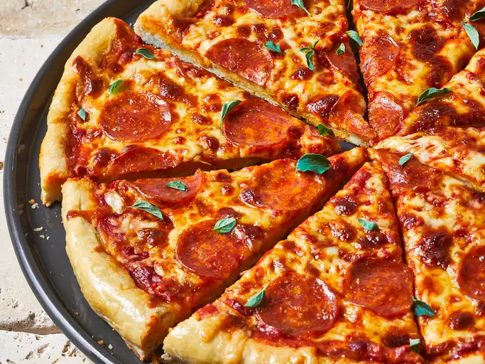

Pizza Recipe

Description
This pepperoni pizza recipe gives rise to a fast and easy classic! The delicious pizza crust and tomato sauce will be made from scratch to give an authentic pizza flavour experience.
Ingredients
- Mozzarella Cheese
- Pepperoni
- Pizza Dough
- Yeast
- Water
- Flour
- Oil
- Salt
- Sugar
- Cornmeal
- Pizza Sauce
- Water
- Tomato Paste
- Dried Oregano, crushed
- Dried Basil, crushed
- Garlic Powder
- Onion Powder
- Sugar
- Salt
- Black Pepper
Steps
- Preheat the oven to 220°C.
- Make the pizza sauce by whisking the sauce ingredients until smooth.
- Make the pizza dough by combining dough ingredients until a sticky and soft dough forms.
- Knead the dough on a floured surface until smooth and elastic.

- Form the dough into a pizza pan.
- Finish the preparation by topping the dough with sauce, shredded mozzarella, and pepperoni.
- Bake in preheated oven until cheese is bubbly and crust turns golden brown (18-20 minutes).
- Enjoy!
Return to Top
Return to Homepage